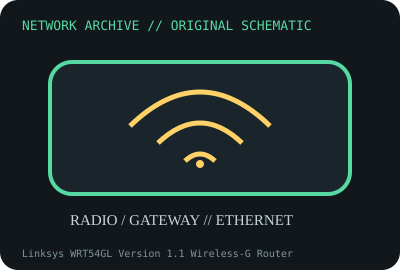

[ MODEL-SPECIFIC NETWORK HARDWARE ]
Linksys WRT54GL Version 1.1 Wireless-G Router
Legacy 2.4GHz 802.11g router with four-port Fast Ethernet switch. Confirm exact product label and revision before applying specifications.

IDENTIFICATION: Confirm manufacturer PID, hardware revision, device ID or module suffix. Nominal standards/link rates are not measurements of payload performance.
Exact specifications and compatibility
| Dedicated subcategory | Network appliances: routers, access points & switches |
|---|---|
| Exact product/model | Linksys WRT54GL Version 1.1 Wireless-G Router |
| Bus, ports and physical interface | One 10/100BASE-TX WAN RJ-45 and four 10/100 LAN RJ-45; detachable antennas and 12V DC supply. |
| PHY, radio or protocol | 802.11b/g 2.4GHz access point/router; 802.3/802.3u wired interfaces. |
| Nominal rate (not measured) | 54Mb/s maximum 802.11g PHY; Ethernet ports 100Mb/s nominal. Neither is measured throughput. |
| Measured throughput | No measured benchmark is claimed for a physical specimen. A valid result must record host/peer, link partner, media/cable, driver/firmware, traffic pattern, test tool and duration. |
| Drivers, OS and firmware | Linksys legacy stock firmware; third-party firmware support is build-specific and installation can risk device. Confirm exact V1.1 flash/RAM and bootloader first. |
| Compatibility | Requires 2.4GHz-compatible clients and 10/100 topology. Use exact DC supply rating/polarity; old security modes may be unsuitable for modern networks. |
| Variant warning | WRT54GL V1.1 differs from WRT54G versions, WRT54GS and later Linksys routers. Hardware flash/RAM/bootloader vary; firmware images are not cross-compatible. |
Model and revision notes
WRT54GL V1.1 differs from WRT54G versions, WRT54GS and later Linksys routers. Hardware flash/RAM/bootloader vary; firmware images are not cross-compatible.
Linksys legacy stock firmware; third-party firmware support is build-specific and installation can risk device. Confirm exact V1.1 flash/RAM and bootloader first.
Requires 2.4GHz-compatible clients and 10/100 topology. Use exact DC supply rating/polarity; old security modes may be unsuitable for modern networks.
Archival, ESD and preservation notes
Record version, FCC ID, board/flash, firmware, PSU and antenna set. Avoid deploying with obsolete security; preserve isolated/offline for archival use.
Document source URL, access date, document revision and specimen label/condition. Preserve without credentials or private configuration.
Primary manufacturer and standards sources
- Linksys WRT54GL product/support resourcesPrimary manufacturer or standards documentation; verify exact SKU and host revision.
- Linksys legacy support and downloadsPrimary manufacturer or standards documentation; verify exact SKU and host revision.
- IEEE 802.11 standards working groupPrimary manufacturer or standards documentation; verify exact SKU and host revision.
Manufacturer statements cover the named part or its documented product family; the exact labeled revision and vendor compatibility list take precedence.